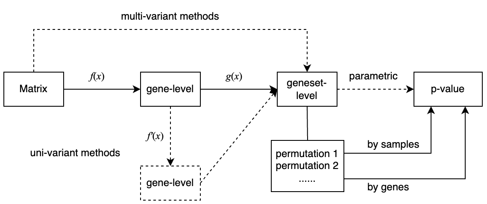
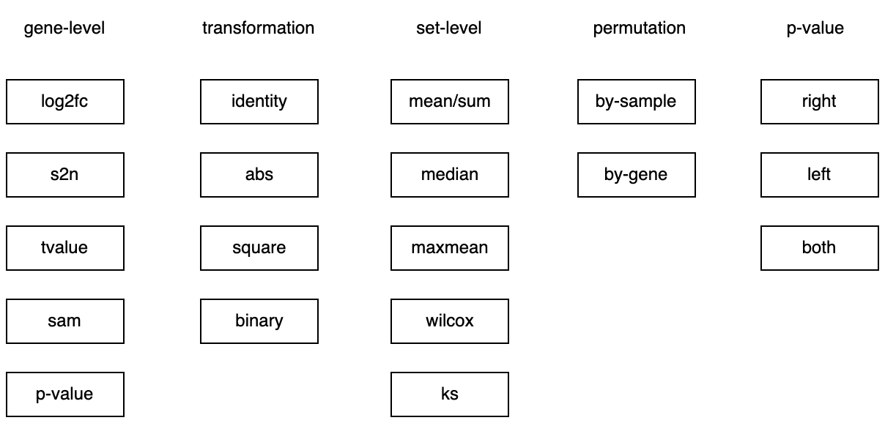
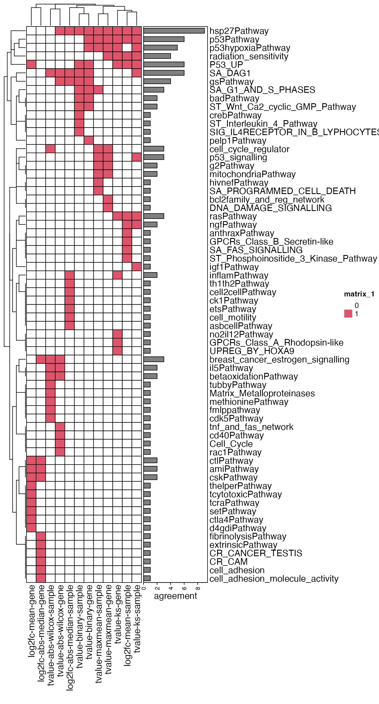

Topic 8-01: GSEA framework
Zuguang Gu z.gu@dkfz.de
2025-05-30
Source:vignettes/topic8_01_GSEA_framework.Rmd
topic8_01_GSEA_framework.RmdLoad the p53 dataset.
library(GSEAtopics)
data(p53_dataset)
expr = p53_dataset$expr
condition = p53_dataset$condition
gs = p53_dataset$gsThe process of GSEA framework:

In this document, we only implement the framework for the univariant procedure.
Gene-level
For the gene-level function, the inputs are:
- the expression matrix
- condition vector
And the output is
- a numeric vector
Let’s implement the following gene-level metrics:
- log2 fold change
- signal-to-noise ratio
- t-value
- SAM t-value
- p-value
library(matrixStats)
library(genefilter)
gene_level = function(mat, condition, method = "tvalue") {
le = levels(condition)
l_group1 = condition == le[1]
l_group2 = !l_group1
mat1 = mat[, l_group1, drop = FALSE] # sub-matrix for condition 1
mat2 = mat[, l_group2, drop = FALSE] # sub-matrix for condition 2
n1 = ncol(mat1)
n2 = ncol(mat2)
miu1 = rowMeans(mat1)
miu2 = rowMeans(mat2)
v1 = rowVars(mat1)
v2 = rowVars(mat2)
if(method == "log2fc") {
stat = log2(miu1/miu2)
} else if(method == "s2n") {
stat = (miu1 - miu2)/(sqrt(v1) + sqrt(v2))
} else if(method == "tvalue") {
sp = sqrt( ((n1-1)*v1 + (n2-1)*v2)/(n1 + n2 - 2) )*sqrt(1/n1 + 1/n2) # similar variance
stat = (miu1 - miu2)/sp
} else if(method == "sam") {
sp = sqrt( ((n1-1)*v1 + (n2-1)*v2)/(n1 + n2 - 2) )*sqrt(1/n1 + 1/n2)
stat = (miu1 - miu2)/(sp + quantile(sp, 0.1))
} else if(method == "pvalue") {
stat = rowttests(mat, condition)$p.value
names(stat) = rownames(mat)
} else {
stop("method is not supported.")
}
return(stat)
}Let’s validate these metrics. Make sure the returned gene-level vector has genes as names.
gene_level(expr, condition, method = "log2fc") |> head()## TACC2 C14orf132 AGER 32385_at RBM17 DYT1
## 0.07593411 0.55514339 -0.08159075 0.04059226 -0.31549894 -0.02842489
gene_level(expr, condition, method = "s2n") |> head()## TACC2 C14orf132 AGER 32385_at RBM17 DYT1
## 0.03877608 0.17250784 -0.11073309 0.02971246 -0.16602936 -0.03105742
gene_level(expr, condition, method = "tvalue") |> head()## TACC2 C14orf132 AGER 32385_at RBM17 DYT1
## 0.2722180 1.0253505 -0.7237478 0.2055698 -1.0847294 -0.2124849
gene_level(expr, condition, method = "sam") |> head()## TACC2 C14orf132 AGER 32385_at RBM17 DYT1
## 0.2470969 0.9772511 -0.5267932 0.1148408 -0.4377112 -0.1962275
gene_level(expr, condition, method = "pvalue") |> head()## TACC2 C14orf132 AGER 32385_at RBM17 DYT1
## 0.7866220 0.3103376 0.4727332 0.8379963 0.2834598 0.8326286Question: consider to implement a gene-leve metric
(signed log_p): -log10(p)*sign(t), or the ranks
rank(t) - length(t)/2.
Transformation on gene-level
The transformation function accepts a gene-level vector and returns a gene-level vector where values have been updated.
We implement the following transformations:
- identity
- abs
- square
- binary
trans_gene_level = function(gene_stat, method = "identity") {
if(method == "identity") {
gene_stat2 = gene_stat
} else if(method == "abs") {
gene_stat2 = abs(gene_stat)
} else if(method == "square") {
gene_stat2 = gene_stat^2
} else if(method == "binary") {
gene_stat2 = ???
} else {
stop("method is not supported.")
}
return(gene_stat2)
}The implementation of the binary transformation might need more work,
as it can be defined as larger or less than a cutoff, or the filtering
is applied on the absolute value of the input gene-level vector, such as
|t| > 2. We would add an additional argument to let
users to define their binary transformation.
trans_gene_level = function(gene_stat, method = "abs", binarize) {
if(method == "identity") {
gene_stat2 = gene_stat
} else if(method == "abs") {
gene_stat2 = abs(gene_stat)
} else if(method == "square") {
gene_stat2 = gene_stat^2
} else if(method == "binary") {
gene_stat2 = binarize(gene_stat) + 0 # to convert to numeric
} else {
stop("method is not supported.")
}
return(gene_stat2)
}Examples of the self-defined function binarize are:
function(x) x < 0.05 # if the gene scores are p-values
function(x) abs(x) > 2 # if the gene scores are t-values
function(x) abs(x) > 1 # if the gene scores are log2 fold changesActually trans_gene_level() can be integrated into
gene_level() as f'(f(...)) also returns
gene-level scores.
Set-level
The geneset-level function accepts two inputs:
- A gene-level vector
- A gene set represented as a vector of gene IDs, or a logical vector representing whether the genes are in the gene set.
Output is simply
- A geneset-level statistic.
Let’s implement the following methods:
- mean
- median
- maxmean
- wilcox
- ks (two-sided statistic)
set_level = function(gene_stat, l_set, method) {
if(method == "mean") {
stat = mean(gene_stat[l_set])
} else if(method == "median") {
stat = median(gene_stat[l_set])
} else if(method == "maxmean") {
s = gene_stat[l_set]
if(all(s >= 0) || all(s <= 0)) {
stat = mean(s)
} else {
s1 = mean(s[s > 0])
s2 = -mean(s[s < 0])
stat = ifelse(s1 > s2, s1, -s2)
}
} else if(method == "wilcox") {
# stat = wilcox.test(gene_stat[l_set], gene_stat[!l_set])$statistic
# we use a faster version
stat = set_level_wilcox(gene_stat, l_set)
} else if(method == "ks") {
od = order(gene_stat, decreasing = TRUE)
gene_stat = gene_stat[od]
l_set = l_set[od]
s_set = abs(gene_stat)
s_set[!l_set] = 0
f1 = cumsum(s_set)/sum(s_set)
l_other = !l_set
f2 = cumsum(l_other)/sum(l_other)
m1 = max(f1 - f2)
m2 = min(f1 - f2)
stat = max(abs(m1), abs(m2)) * ifelse(abs(m1) > abs(m2), sign(m1), sign(m2))
} else {
stop("method is not supported.")
}
return(unname(stat))
}Let’s validate set_level():
gene_stat = gene_level(expr, condition, method = "s2n")
l_set = names(gene_stat) %in% gs[["p53hypoxiaPathway"]]
set_level(gene_stat, l_set, "mean")## [1] -0.1449222
set_level(gene_stat, l_set, "median")## [1] -0.0349521
set_level(gene_stat, l_set, "maxmean")## [1] -0.3329503
set_level(gene_stat, l_set, "wilcox")## [1] 868
set_level(gene_stat, l_set, "ks")## [1] -0.6816006Calculate p-value from the null distribution
A null distribution of the set-level statistic is generated by permutation. The p-value can be calculated as one-sided or two-sided.
Put together
Now we have all the components ready.
-
gene_level: five methods, -
trans_gene_level: four methods, -
set_level: five methods, -
p_null: three methods.
ORA and GSEA can be constructed by different combinations of these components:
For ORA:
-
gene_level: p-value -
trans_gene_level: binary -
set_level: sum, basically has the same effect as mean -
p_null: sample permutation + right-sided
For GSEA (v2):
-
gene_level: signal-to-noise ratio -
trans_gene_level: none -
set_level: ks -
p_null: sample or gene permutation, one or two-sided
Now we can wrap them into a “framework” function. First let the function only return set-level statistics.
gsea_framework = function(mat, condition, gene_sets,
gene_level_method = "tvalue",
transform = "identity", binarize = NULL,
set_level_method = "mean",
perm_type = "sample", n_perm = 1000, p_null_side = "both") {
gene_stat = gene_level(mat, condition, method = gene_level_method)
gene_stat = trans_gene_level(gene_stat, transform, binarize = binarize)
set_stat = sapply(gene_sets, function(set) {
l_set = rownames(mat) %in% set
set_level(gene_stat, l_set, set_level_method)
})
set_stat
}Let’s test it:
gsea_framework(expr, condition, gs) |> head()## 41bbPathway ace2Pathway acetaminophenPathway
## -0.00266329 -1.17766452 -0.48669800
## achPathway actinYPathway agpcrPathway
## -0.06278454 -0.32166317 -0.15656410Next we add the permutations and let the function return a complete data frame.
library(fastmatch)
gsea_framework = function(mat, condition, gene_sets,
gene_level_method = "tvalue",
transform = "identity", binarize = NULL,
set_level_method = "mean",
perm_type = "sample", nperm = 1000, p_null_side = "both") {
n_gs = length(gene_sets)
gene_stat = gene_level(mat, condition, method = gene_level_method)
gene_stat = trans_gene_level(gene_stat, transform, binarize = binarize)
l_set_list = lapply(gene_sets, function(set) {
rownames(mat) %fin% set
})
set_stat = sapply(l_set_list, function(l_set) {
set_level(gene_stat, l_set, set_level_method)
})
## null distribution
set_stat_random = list()
for(i in seq_len(nperm)) {
if(perm_type == "sample") {
condition_random = sample(condition)
gene_stat_random = gene_level(mat, condition_random, method = gene_level_method)
gene_stat_random = trans_gene_level(gene_stat_random, transform, binarize = binarize)
set_stat_random[[i]] = sapply(l_set_list, function(l_set) {
set_level(gene_stat_random, l_set, set_level_method)
})
} else if(perm_type == "gene") {
# because l_set_list is pre-calculated, so we permute the values while keeping the order of genes
gene_stat_random = structure(sample(gene_stat), names = names(gene_stat))
set_stat_random[[i]] = sapply(l_set_list, function(l_set) {
set_level(gene_stat_random, l_set, set_level_method)
})
} else {
stop("wrong permutation type.")
}
if(i %% 100 == 0) {
message(i, " permutations done.")
}
}
set_stat_random = do.call(cbind, set_stat_random)
n_set = length(gene_sets)
p = numeric(n_set)
for(i in seq_len(n_set)) {
p[i] = p_null(set_stat[i], set_stat_random[i, ], p_null_side)
}
df = data.frame(gene_set = names(gene_sets),
stat = set_stat,
gs_size = sapply(l_set_list, sum),
p_value = p)
df$p_adjust = p.adjust(p, "BH")
df = df[order(df$p_value), ]
rownames(df) = NULL
return(df)
}
gsea_framework(expr, condition, gs) |> head()## gene_set stat gs_size p_value p_adjust
## 1 ace2Pathway -1.1776645 11 0 0
## 2 hsp27Pathway -1.2530942 15 0 0
## 3 il4Pathway -1.1211118 11 0 0
## 4 p53hypoxiaPathway -1.0396952 20 0 0
## 5 p53Pathway -1.4462280 16 0 0
## 6 radiation_sensitivity -0.9476408 26 0 0With different combinations of methods, the total number of methods is huge!

Comparison
Let’s do the comparisons on the following combinations:
| gene-level | transformation | set-level | permutation | null side |
|---|---|---|---|---|
| log2fc | identity | mean | sample | both |
| log2fc | abs | median | sample | right |
| tvalue | identity | ks | sample | both |
| tvalue | identity | maxmean | sample | both |
| tvalue | abs | wilcox | sample | right |
| tvalue | binary | sum (mean) | sample | right |
| log2fc | identity | mean | gene | both |
| log2fc | abs | median | gene | right |
| tvalue | identity | ks | gene | both |
| tvalue | identity | maxmean | gene | both |
| tvalue | abs | wilcox | gene | right |
| tvalue | binary | sum (mean) | gene | right |
tbl = list(
"log2fc-mean-sample" = gsea_framework(expr, condition, gs,
gene_level_method = "log2fc",
transform = "identity",
set_level_method = "mean",
perm_type = "sample", p_null_side = "both"),
"log2fc-abs-median-sample" = gsea_framework(expr, condition, gs,
gene_level_method = "log2fc",
transform = "abs",
set_level_method = "median",
perm_type = "sample", p_null_side = "right"),
"tvalue-ks-sample" = gsea_framework(expr, condition, gs,
gene_level_method = "tvalue",
transform = "identity",
set_level_method = "ks",
perm_type = "sample", p_null_side = "both"),
"tvalue-maxmean-sample" = gsea_framework(expr, condition, gs,
gene_level_method = "tvalue",
transform = "identity",
set_level_method = "maxmean",
perm_type = "sample", p_null_side = "both"),
"tvalue-abs-wilcox-sample" = gsea_framework(expr, condition, gs,
gene_level_method = "tvalue",
transform = "abs",
set_level_method = "wilcox",
perm_type = "sample", p_null_side = "right"),
"tvalue-binary-sample" = gsea_framework(expr, condition, gs,
gene_level_method = "tvalue",
transform = "binary", binarize = function(x) abs(x) > 2,
set_level_method = "mean",
perm_type = "sample", p_null_side = "right"),
# the same combinations, but using gene permutations
"log2fc-mean-gene" = gsea_framework(expr, condition, gs,
gene_level_method = "log2fc",
transform = "identity",
set_level_method = "mean",
perm_type = "gene", p_null_side = "both"),
"log2fc-abs-median-gene" = gsea_framework(expr, condition, gs,
gene_level_method = "log2fc",
transform = "abs",
set_level_method = "median",
perm_type = "gene", p_null_side = "right"),
"tvalue-ks-gene" = gsea_framework(expr, condition, gs,
gene_level_method = "tvalue",
transform = "identity",
set_level_method = "ks",
perm_type = "gene", p_null_side = "both"),
"tvalue-maxmean-gene" = gsea_framework(expr, condition, gs,
gene_level_method = "tvalue",
transform = "identity",
set_level_method = "maxmean",
perm_type = "gene", p_null_side = "both"),
"tvalue-abs-wilcox-gene" = gsea_framework(expr, condition, gs,
gene_level_method = "tvalue",
transform = "abs",
set_level_method = "wilcox",
perm_type = "gene", p_null_side = "right"),
"tvalue-binary-gene" = gsea_framework(expr, condition, gs,
gene_level_method = "tvalue",
transform = "binary", binarize = function(x) abs(x) > 2,
set_level_method = "mean",
perm_type = "gene", p_null_side = "right")
)For each analysis, we compare the top 10 most significant gene sets.
lt_sig = lapply(tbl, function(x) {
x$gene_set[1:10]
})
all_sig_terms = unique(unlist(lt_sig))
cm = matrix(0, nrow = length(all_sig_terms), ncol = length(tbl))
rownames(cm) = all_sig_terms
colnames(cm) = names(tbl)
for(i in seq_along(lt_sig)) {
cm[lt_sig[[i]], i] = 1
}
library(ComplexHeatmap)
Heatmap(cm, col = c("0" = "white", "1" = 2), rect_gp = gpar(col = "black"),
right_annotation = rowAnnotation(agreement = anno_barplot(rowSums(cm), width = unit(3, "cm"))))